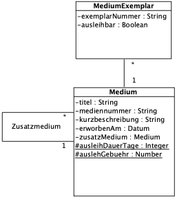

{% extends "../_base_template.html" %}
{% block title %}Lektion 10 - Assoziationen - Kompositionen{% endblock %}

{% block sections %}
<section data-markdown>
<textarea data-template>
<i class="fas fa-flask"></i> Besprechung Hausaufgaben Assoziationen
=============================

Demonstration der Aufgaben am Beamer

</textarea>
</section>

<section data-markdown>
<textarea data-template>
<i class="fas fa-graduation-cap"></i> OOD - Implementation von Kompositionen
=============================

Heutiges Ziel
-------------

* Sie wissen, was Kompositions-Beziehungen sind
* Sie können Kompositionen in Java implementieren

### Hausaufgaben

* Fertigstellen der Kompositions-Übungen

</textarea>
</section>

<section data-markdown data-separator-notes="^Note:">
<textarea data-template>
<i class="fas fa-graduation-cap"></i> Kompositionen
===========

Wir haben letztes Mal verschiedene Beziehungen kennengelernt:

* one-to-many (1:n)
* one-to-one (1:1)
* many-to-one (oder belongs-to, n:1)
* many-to-many (n:m)

Wir schauen uns heute die **Kompositionen** an. Kompositionen sind ein
Spezialfall der one-to-(one|many)-Beziehung. Nämlich?


<!-- .element class="fragment" -->Bei **Kompositionen** ist das Ganze (one)
verantwortlich für die Existenz und Speicherung seiner Teile (one|many).
Sie beschreibt, wie sich etwas Ganzes aus Einzelteilen zusammensetzt und diese
kapselt.

</textarea>
</section>


<section>
<section data-markdown data-separator-notes="^Note:">
<textarea data-template>
<i class="fas fa-graduation-cap"></i> Kompositionen
===========

Bei **Kompositionen** ist das Ganze (one) verantwortlich für die Existenz und Speicherung seiner Teile (many).

Wie setzen Sie dies nun in Java um?

* Erstellen Sie ein Demo-Java-Programm, welches diese Anforderungen demonstriert:
  * Unser Bibliothekssystem kennt **Medien** (Ganzes), welche mehrere **Exemplare** (Teile) haben können.
    Erstellen Sie diese beiden Klassen und setzen Sie dies als Komposition in Java um:
  * Sorgen Sie dafür, dass beim Erstellen eines Mediums (z.B. Buch) **auch gleich ein
    erstes Exemplar erzeugt wird.**
  * Erstellen Sie eine Methode auf **Medium**, welche neue Exemplare erzeugen kann.
  * Erstellen Sie eine Methode auf **Medium**, welche alle Exemplare ausgibt
  * Sorgen Sie dafür, dass beim Löschen des Mediums (z.B. aus Datenbank entfernt) auch
    gleich die zugewiesenen Exemplare gelöscht werden.
  * Erstellen Sie eine "Exemplar löschen"-Methode auf dem **Medium**: Wie stellen Sie sicher,
    dass niemand das **letzte** Exemplar löschen kann? Zeigen Sie dies in Ihrer Methode auf!



</textarea>
</section>

<section data-markdown data-separator-notes="^Note:">
<textarea data-template>
<i class="fas fa-graduation-cap"></i> Kompositionen
===========

* **Wie stellen Sie die Minimum-Bedingung (mind. 1 Exemplar) sicher?**

Die oben gezeigte Komposition (Medium mit Exemplaren) hat eine Minimalbedingung:
Es immer mind. 1 Exemplar pro Medium existieren.

Sie stellen dies an 2 Orten sicher:

1. Beim Erstellen des Mediums **im Konstruktur erstellen Sie gleich ein Exemplar**:
```java
class Medium {
    List<Exemplar> exemplare = new ArrayList<>();
    public Medium() {
        Exemplar ex = new Exemplar(); ex.setExemplarNummer(1);
        exemplare.add(ex);
    }
}
```

2. in der **Exemplar-Löschen-Methode**:

```java
class Medium {
    List<Exemplar> exemplare = new ArrayList<>();
    public void deleteExemplar(String nr) {
        if (exemplare.size() > 1) {
            // ... löschen OK, proceed
        } else {
            throw new Exception("Mind. 1 Exemplar muss vorhanden sein.");
        }
    }
}
```
</textarea>
</section>
</section>

<section>
<section data-markdown>
<textarea data-template>
<i class="fas fa-flask"></i> Hausaufgaben
=============================

Siehe Moodle:

* Aufgabe: Umbau des Prototyps: Person-Klasse einführen
* Aufgabe: Implementation von Kompositionen - Medium, MediumExemplar:

Stellen Sie das Beispiel von vorhin fertig: Ihr Programm sollte in der Lage sein:

* neue konkrete Medien (z.B. **Buch**) inkl. dem ersten Exemplar zu erstellen
* Weitere Exemplare hinzuzufügen
* bestimmte Exemplare (nach Nummer) zu löschen, unter Einhaltung der Minimal-Bedingung
* Das Medium inkl. Exemplare in unserem DataContainer zu persistieren
* Ein Medium inkl. Exemplare zu löschen: Löschen bedeutet in diesem Fall,
  vom persistenten "Datenpool", z.B. einer Datenbank, zu löschen. Demonstrieren Sie dies
  beispielhaft mit einer delete()-Methode, welche ein System.out.println() ausgibt.

Erstellen Sie dazu ein Demo-Main-Programm, unabhängig des Prototypen-Main, welches die
Funktionalität im Code / mittels System.out.println() demonstriert.

</textarea>
</section>
</section>
{% endblock %}
